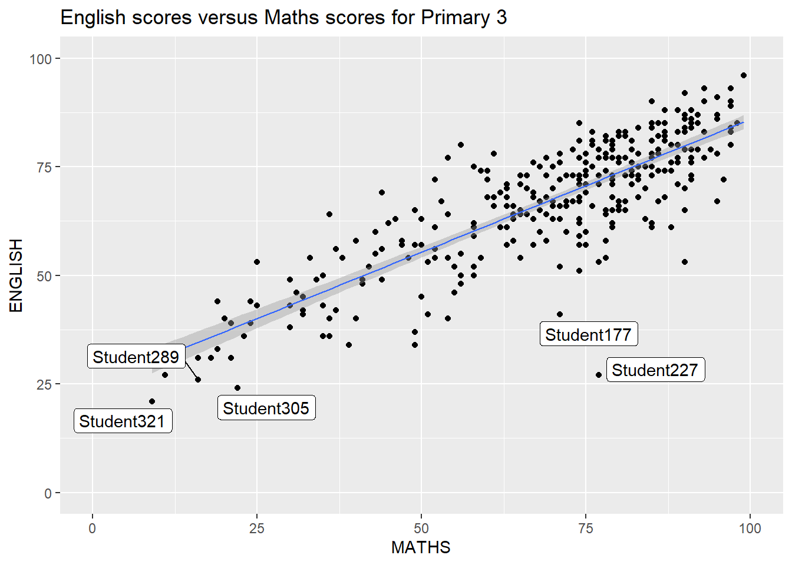
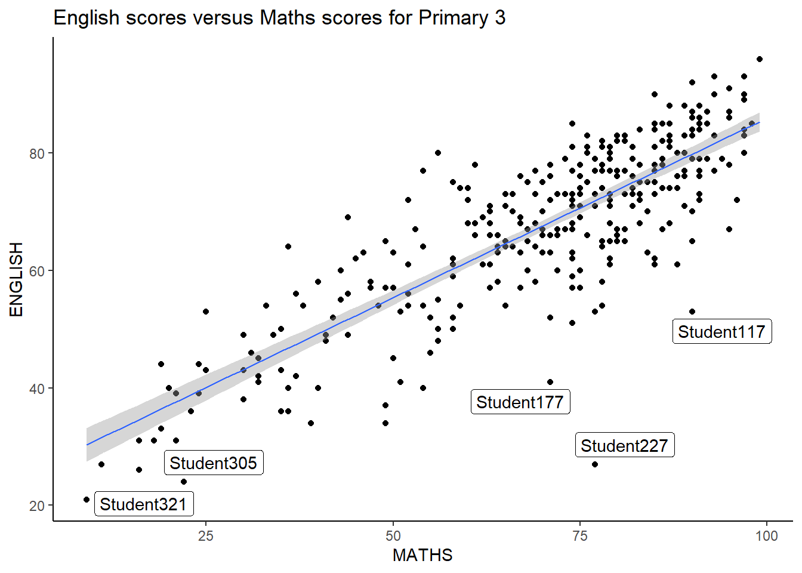
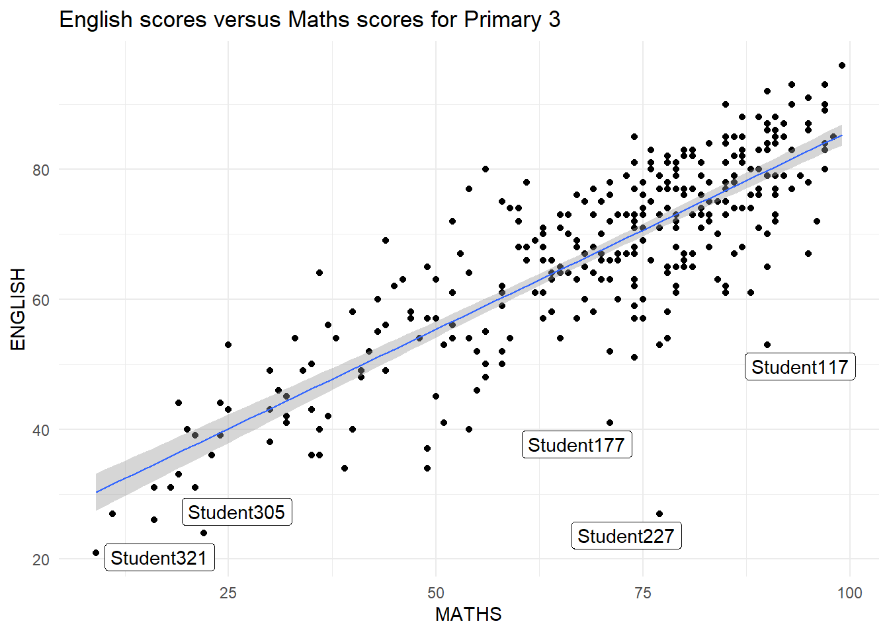

pacman::p_load(ggrepel,patchwork,
ggthemes,hrbrthemes,
tidyverse)Hands-on Ex 2: Beyond ggplot2 Fundamentals
1 Overview
This chapter / Hands-on exercise is an introduction to several ggplot2 extension. Key idea is to create more elegant and effective statistical graphics, pleasing to the eyes of the reader, and reducing the cognitive load of the reader.
Key learning:
control the placement of annotation on a graph by using functions provided in ggrepel package
create professional publication quality figure by using functions provided in ggthemes and hrbrthemes packages
plot composite figure by combining ggplot2 graphs by using patchwork package.
2 Getting started
In this exercise, beside tidyverse, four R packages will be used. They are:
- ggrepel: an R package provides geoms for ggplot2 to repel overlapping text labels.
- ggthemes: an R package provides some extra themes, geoms, and scales for ‘ggplot2’.
- hrbrthemes: an R package provides typography-centric themes and theme components for ggplot2.
- patchwork: an R package for preparing composite figure created using ggplot2.
Code chunk below will be used to check if these packages have been installed and also will load them onto your working R environment.
For the purpose of this exercise, a data file called Exam_data will be used. It consists of year end examination grades of a cohort of primary 3 students from a local school. It is in csv file format.
The code chunk below imports exam_data.csv into R environment by using read_csv() function of readr package. readr is one of the tidyverse package.
exam_data <- read_csv("data/Exam_data.csv")glimpse(exam_data)Rows: 322
Columns: 7
$ ID <chr> "Student321", "Student305", "Student289", "Student227", "Stude…
$ CLASS <chr> "3I", "3I", "3H", "3F", "3I", "3I", "3I", "3I", "3I", "3H", "3…
$ GENDER <chr> "Male", "Female", "Male", "Male", "Male", "Female", "Male", "M…
$ RACE <chr> "Malay", "Malay", "Chinese", "Chinese", "Malay", "Malay", "Chi…
$ ENGLISH <dbl> 21, 24, 26, 27, 27, 31, 31, 31, 33, 34, 34, 36, 36, 36, 37, 38…
$ MATHS <dbl> 9, 22, 16, 77, 11, 16, 21, 18, 19, 49, 39, 35, 23, 36, 49, 30,…
$ SCIENCE <dbl> 15, 16, 16, 31, 25, 16, 25, 27, 15, 37, 42, 22, 32, 36, 35, 45…There are a total of seven attributes in the exam_data tibble data frame. Four of them are categorical data type and the other three are in continuous data type.
Categorical attributes: ID, CLASS, GENDER and RACE.
Continuous attributes: MATHS, ENGLISH and SCIENCE.
3 Beyond ggplot2 Annotation: ggrepel
Annotation for large number of data points is potentially challenging, as the annotations may overwhelm the plot. In this example, geom_label() is used to show the labels on all the data points. The resulting plot below shows the annotation covering much of the data points.
ggplot(data=exam_data,
aes(x= MATHS,
y=ENGLISH)) +
geom_point() +
geom_smooth(method=lm,
linewidth=0.5) +
geom_label(aes(label = ID),
hjust = 0.5,
vjust = 0.5) +
coord_cartesian(xlim=c(0,100),
ylim=c(0,100)) +
ggtitle("English scores versus Maths scores for Primary 3")ggrepel is an extension of ggplot2 package which provides geoms for ggplot2 to repel overlapping text as in our example above.
We simply replace geom_text() by geom_text_repel() and geom_label() by geom_label_repel.

ggplot(exam_data,
aes(x= MATHS,
y = ENGLISH)) +
geom_point() +
geom_smooth(method = lm,
linewidth = 0.5) +
geom_label_repel(aes(label = ID),
hjust = 0.5,
vjust = 0.5) +
coord_cartesian(xlim = c(0,100),
ylim = c(0,100)) +
ggtitle("English scores versus Maths scores for Primary 3")4 Beyond ggplot2 Themes
There are eight built-in themes in ggplot2. You can browse through the plots of all the themes below. Visit this link to learn more about ggplot2 Themes.


Points to note
- Note 1
- Note 2